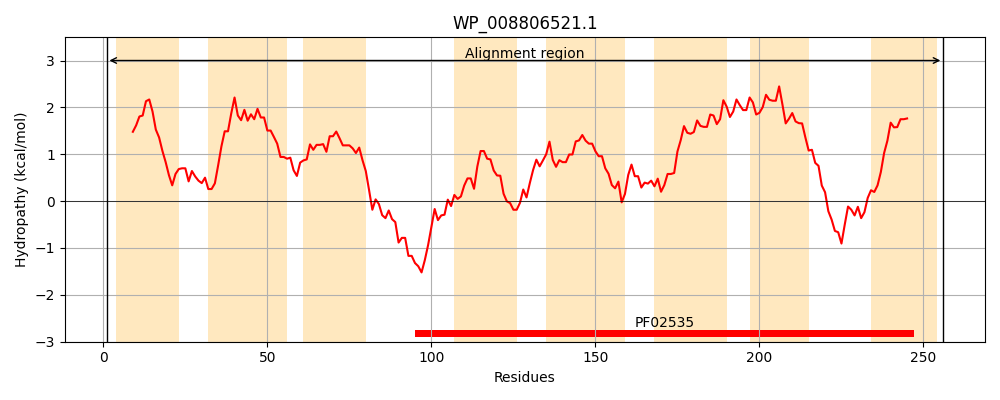
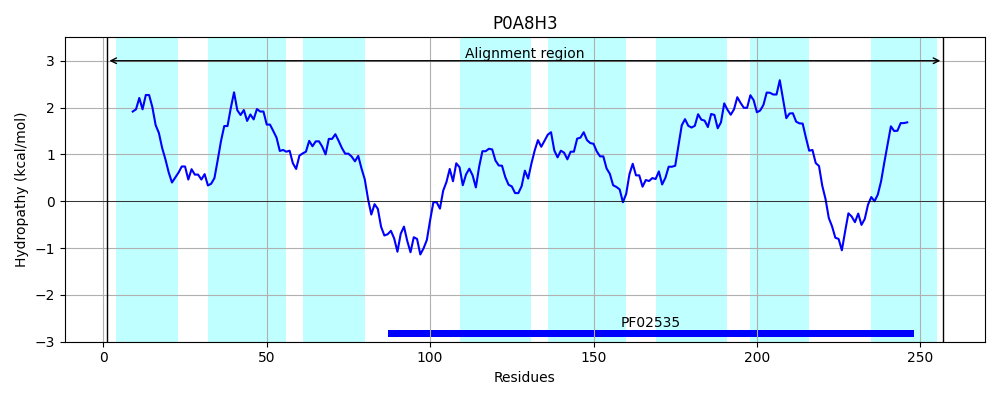
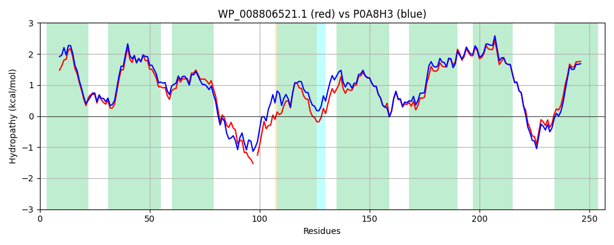

Hit Accession: P0A8H3
Hit TCID: 2.A.5.5.1
Hit Description: gnl|BL_ORD_ID|8617 gnl|TC-DB|P0A8H3|2.A.5.5.1 Zinc transporter zupT - Escherichia coli.
Mach Len: 257
e:0.000000
Query TMS Count : 8
Hit TMS Count: 8
TMS-Overlap Score: 8.350000
Predicted Substrates:None
BLAST Alignment:
Score: 1105 , Bit scores: 430 bits, E-value: 1.1e-154, Alignment length: 257, Percentage identity: 84
Query: 1 MSSPLILTLLAGSATFIGAIFGVIGQKPSNRLLGFSLGFAAGIMLLISLMEMLPAALTAEGMSPLLGYGMFVIGLLGYFGLDRLLPHAHPQDLMTPAT-PRPRNLRRTAILLTLGISLHNFPEGIATYVTASNNLELGMGVALAVALHNIPEGLAVAGPVYAATGSRSKAVLWAGLSGMAEILGGVLAWLILGSLVSPLVMGAIMAAVAGIMVALSVDELMPLAKEIDPQSNPSYGVLCGMSVMGLSLVVLQTMGIG 256
MS PLILT+LAG+ATFIGA GV+GQKPSNRLL FSLGFAAGIMLLISLMEMLPAAL AEGMSP+LGYGMF+ GLLGYFGLDR+LPHAHPQDLM + P P++++RTAILLTLGISLHNFPEGIAT+VTAS+NLELG G+ALAVALHNIPEGLAVAGPVYAATGS+ A+LWAG+SG+AEILGGVLAWLILGS++SP+VM AIMAAVAGIMVALSVDELMPLAKEIDP +NPSYGVLCGMSVMG SLV+LQT GIG
Sbjct: 1 MSVPLILTILAGAATFIGAFLGVLGQKPSNRLLAFSLGFAAGIMLLISLMEMLPAALAAEGMSPVLGYGMFIFGLLGYFGLDRMLPHAHPQDLMQKSVQPLPKSIKRTAILLTLGISLHNFPEGIATFVTASSNLELGFGIALAVALHNIPEGLAVAGPVYAATGSKRTAILWAGISGLAEILGGVLAWLILGSMISPVVMAAIMAAVAGIMVALSVDELMPLAKEIDPNNNPSYGVLCGMSVMGFSLVLLQTAGIG 257 | Protein Hydropathy Plots: |
|---|
|  |  |
Pairwise Alignment-Hydropathy Plot:
|
|---|
|  |